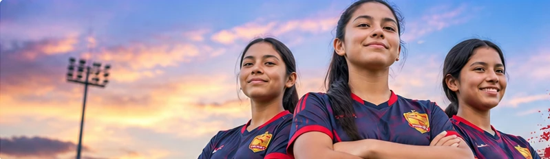
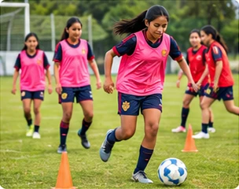
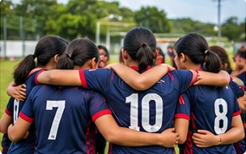

Volver a la revista
Volver al inicio
IDIOMA / LANGUAGE
Español
English
Português
Français
Deutsch
Italiano
BARRACUDA F.C.
REVISTA DIGITAL · DISCIPLINA · UNIÓN · GRANDEZA
Artículo N.º 7
El fútbol también tiene nombre de mujer
Talento, coraje y sueños sin límites



Volver a la revista
Volver al inicio